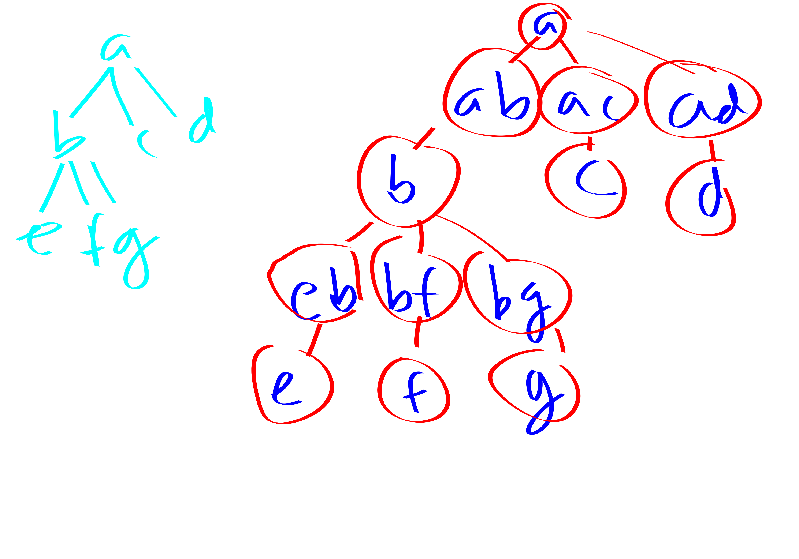

The thing to wrap your head around in all of these algorithms is that vertices appear in a bunch of different places, but those places are “contiguous” and satisfy nice “separation” properties.
Theorem. Maximum weighted independent set in a tree has an easy dynamic program.
Proof. In a general graph it is quite a difficult question.
However, suppose that your graph is a subgraph of a not-so-tall grid. In particular a grid of height \(k\). In this case we can also give a pretty nice DP.
We sweep over columns. Each column just needs to know which of the up to \(k\) vertices in the previous column were chosen. There are \(2^{k}\) possibilities. So our DP table has an entry for each possibility.
The most important property we needed here was “separators”.
Definition. Nice Path decomposition: A sequence of bags (which are subsets of the vertex set) such that:
- First and last bags are empty
- At each step we either introduce a new vertex or forget a vertex (we introduce and forget each vertex exactly once) compared to the previous bag.
- For each edge \(uv\) there is a bag that contains both endpoints of the edge.
The width of a path decomposition is the size of the largest bag minus one.
Definition. We say that \((A, B)\) is a separation of a graph if \(A\cup B = V\), and if there are no edges between \(A\setminus B\) and \(B \setminus A\).
For a set \(A\) we define border \(\partial A\) aas the set of vertices of \(A\) with a neighbor in \(V\setminus A\). Note that \((A, \partial A \cup (V\setminus A))\) is a separation.
Lemma. Each bag \(X_i\) in a path decomposition separates vertices that occur before bag \(i\) and vertices that occur after bag \(i\).
Definition. A TREE decomposition of a graph \(G\) is:
A tree \(T\) and a bag associated with each node of \(T\) satisfying:
- Each vertex of \(G\) in at least one of the bags.
- For each edge in \(G\) there is a bag containing both of the edge’s endpoints.
- For each vertex \(v\) the set of bags that contain \(v\) induces a connected subtree of \(T\).
Treewidth: size of largest bag minus 1
Path decomposition: tree decomposition + \(T\) must be a path.
examples: cycle has tree width 2 tree / forest has tree width 1
tree width of planar graph is \(O(\sqrt{n})\) tree width of \(K_n\) is \(n-1.\)
Lemma. Let \(ab\) be an edge in \(T\).
Let \(T_a\) be the connected component resulting from deleting edge \(ab\) and taking the component that contains \(a\). let \(T_b\) be the other component.
Let \(A\) be the union over verices in \(T_a\) of their bags. Let \(B\) be similar for \(T_b\).
Then \((A,B)\) is a separation of \(G\).
Definition. nice tree decomp
three types of vertices:
- join: join two identical nodes
- introduce: node with a single child. This node’s bag has one extra element compared to child.
- forget: node with a single child. This node’s bag has one fewer element than its child.
leaves and root empty
Here’s a nice tree decomposition of a tree: 
as with path decomps there is an efficient algo to turn an arbitrary path decomp into a nice one
now some algorithms
note: - for now we’re just going to assume the algorithms get a tree decomp as part of input.
later we are going to show how to do a pretty decent approx algo for tree width.
even later we will show that sometimes thinking about tree width is useful even if we aren’t parameterizing by it. For example, if the treewidth is large then maybe we can instantly conclude our problem is a no-instance. in this win-win manner treewidth is helpful: either we get a tree decomp or an obstacle.
weighted IS
Proof. In the DP each node in the tree computes, for all possible subsets of the nodes in its bag to include, what the best stuff is for its subtree.
To prove correctness we analyze the four types of nodes:
- leaves (base case)
- introduce
- forget
- join
The separation property lets us get nice algorithms.
For instance, lets talk about introduce nodes: Let \(X_t\) be an introduce node with child \(X_{t'}\), where the vertex introduced at \(X_t\). Fix a subset \(S\subset X_t\). First, check if \(S\) is independent. If not, set \(c[t, S] = -\infty\). Else, split into two cases:
- If \(v\notin S\) then the answer is \(c[t',S]\). This is clear.
- If \(v\in S\) then the answer is \(c[t', S\setminus\{v\}] + w(v)\). It’s pretty clear you can’t hope to do better than this. Slightly less obvious why you can do this well. The reason is, if you let \(\hat{S'}\) be the best set for \(c[t', S\setminus\{v\}]\) then \(v\) has no edges to \(\hat{S'}\) because \(v\) has no edges in \(\hat{S'}\cap X_{t'}\) due to \(S\) being independent and \(S\setminus\{v\} = \hat{S'}\cap X_{t'}\). But also \(v\) has no edges in \(\hat{S'}\setminus X_{t'}\) by the separation property. Anyways this means you can take \(v\).
dom set
Remark. graph of tree width \(k\) has at msot \(kn\) edges.
Definition. We slightly modify the nice tree decomposition definition to be extra nice: now we have “introduce edge bags”.
algorithm for turning a nice tree decomposition into an extra nice tree decomp: put the edge introduce bags between the highest node containing a vertex and the vertex forget bag that used to be that bag’s parent.
Now instead of just looking at \(G[V_t]\) the induced subgraph on the bag subtree rooted at \(t\), we look at \(G_t\) which is like \(G[V_t]\) except in only includes edges whose edge add bag are in the subtree rooted at \(t\).
Theorem. dom set in graphs of bounded tree-width is FPT
Proof. instead of just having a 2 coloring of the vertices in each bag we now have a 3 coloring:
- black: must be included in partial solution
- white: not contained in partial solution, and must be dominated by the partial solution
- grey: not in partial solution. doesn’t matter whether they’re dominated by it or not.
now we give the DP
- leaf node (base case): trivial
- introduce vertex node: added vertex is isolated. so, if it’s black \(+1\), if its white \(+\infty\), if its grey \(+0\).
- introduce edge node: adding an edge can allow you to relax stuff to grey
- forget node: force that guy not to be grey
- join node: if \(v\) black in both then black in join. grey iff grey in both. white else.
steiner tree
connectivity. makes run-time slightly worse